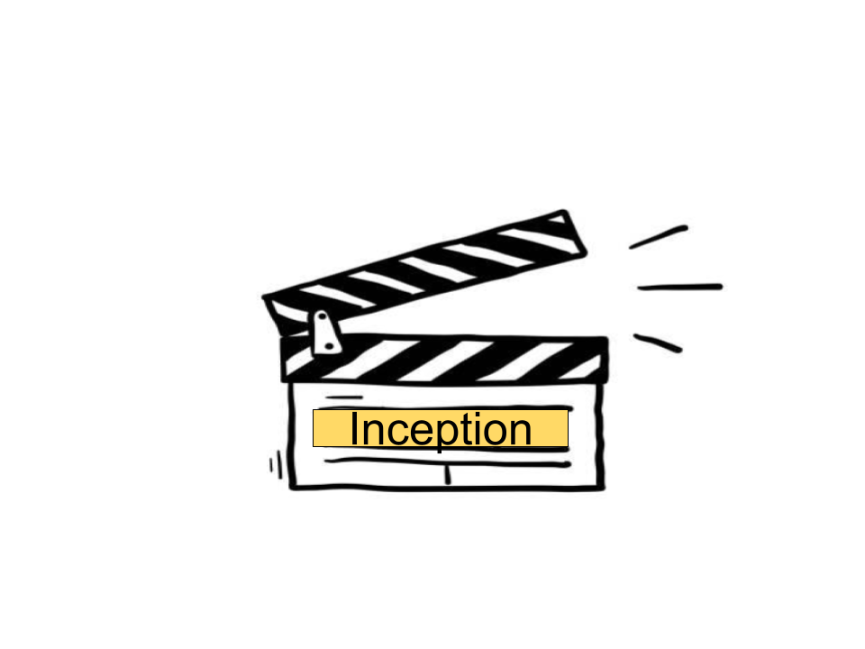
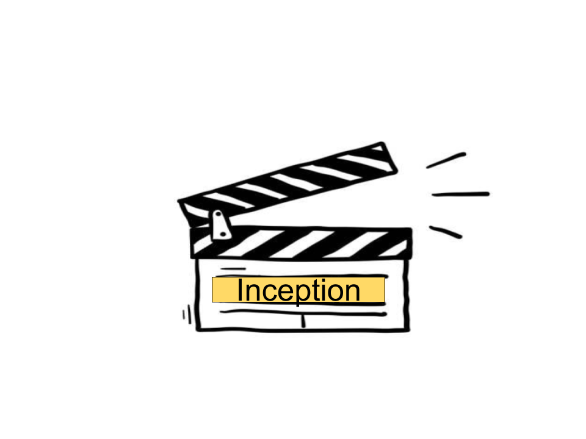

|
Description
Dom Cobb is a skilled thief, the absolute best in the dangerous art of extraction, stealing valuable secrets from deep within the subconscious during the dream state, when the mind is at its most vulnerable. Cobb's rare ability has made him a coveted player in this treacherous new world of corporate espionage, but it has also made him an international fugitive and cost him everything he has ever loved. Now Cobb is being offered a chance at redemption. One last job could give him his life back but only if he can accomplish the impossible, inception. Instead of the perfect heist, Cobb and his team of specialists have to pull off the reverse: their task is not to steal an idea, but to plant one. If they succeed, it could be the perfect crime. But no amount of careful planning or expertise can prepare the team for the dangerous enemy that seems to predict their every move. An enemy that only Cobb could have seen coming..
Movie Info
Genre: Mystery & Thriller, Action, Sci-Fi
Original Language: English
Director: Christopher Nolan
Producer:Christopher Nolan, Emma Thomas
Writer: Christopher Nolan
Release Date (Theaters):Jul 16, 2010 Wide
Release Date (Streaming):Jun 20, 2013
Box Office (Gross USA):$292.6M
Runtime:2h 28m
Production Co:Syncopy, Warner Bros.
Sound Mix:DTS, Dolby Digital, SDDS.